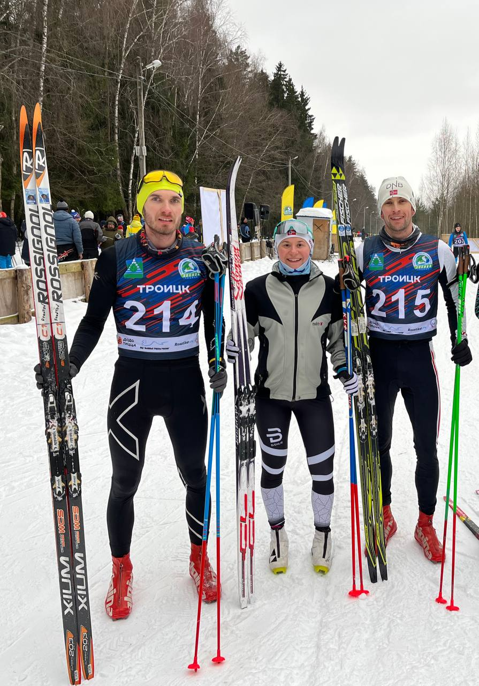
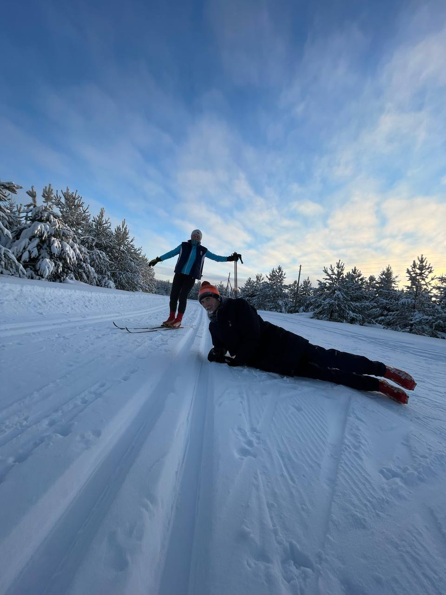

- 20.01.2023
🟡Очередной грядочный кэмп!
🟡Такого снова еще не было!
🟡Место: Малиновка
🟡Даты: 18 - 26 марта 2023
🟡Конец сезона — с нами и пользой!
🟡Наша команда организует еще более угарный кэмп* для ценителей лыжных гонок и безудержного веселья!
(по мнению тренеров и питч тренера номер 1)
🟡3 великолепных тренера (один из них сервисмен на полноги) и шикарный повар, без которого вы не сможете жить, когда вернётесь домой
🟡Максимальные комфортные условия проживания (большой коттедж с камином и сауной)
🟡2 тренировки в день с возможностью удаленной работы
🟡Тренировки на лыжах (конек и классика), подводящие упражнения, силовые лыжника и все удовольствия тренировок для лыжника 🥰
🟡Одна из самых сложных, но красивых трасс России
🟡Март - лучшее время, чтобы побывать в Малиновке, в это время будет много снега, большой световой день и максимально комфортная погода
🟡Полный пансион ол инклюзив (39000р, после 30 января - 41000р)
Вас ждут
Неподражаемые тренеры

Незабываемые трассы
